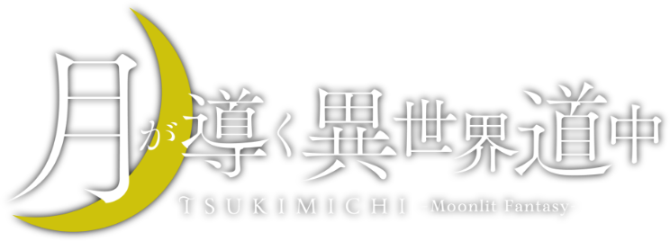
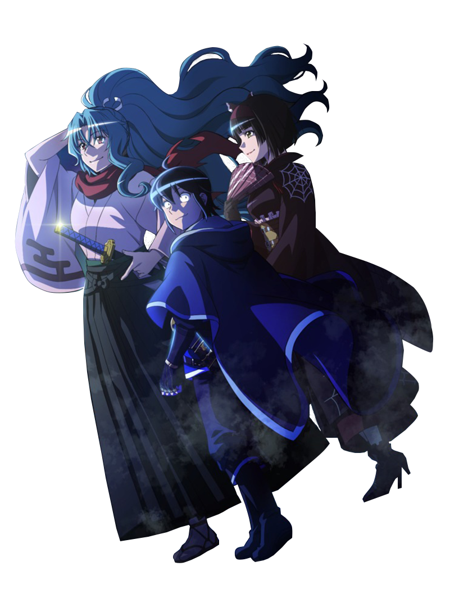

A fantasia de Tsukimichi: Moonlit Fantasy gira em torno de Makoto Misumi, um garoto normal do ensino médio convocado para um mundo alternativo como um bravo guerreiro. Infelizmente, a deusa do mundo disse com desdém: “Seu rosto é feio”, despojou-o de seu título e o baniu para as periferias mais distantes do deserto.
X